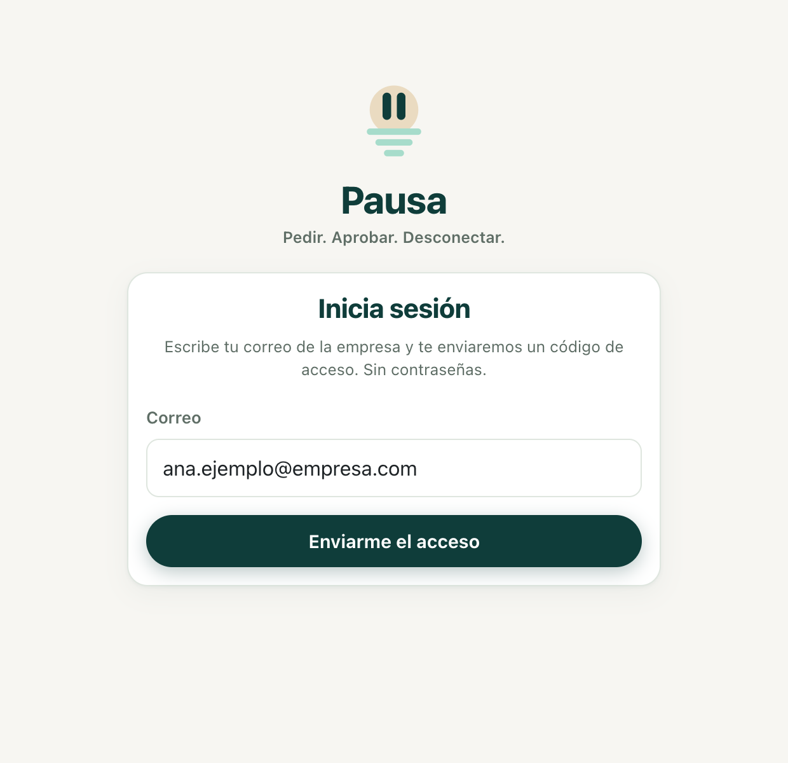
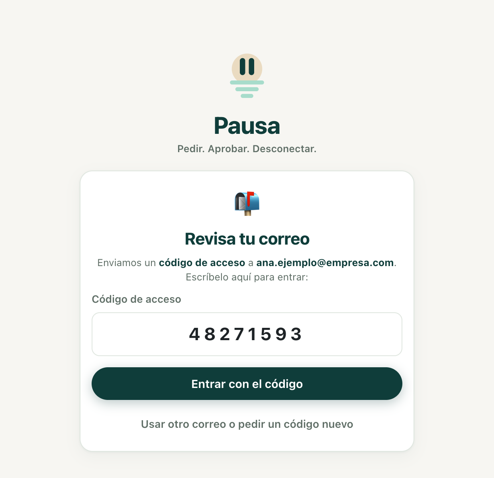
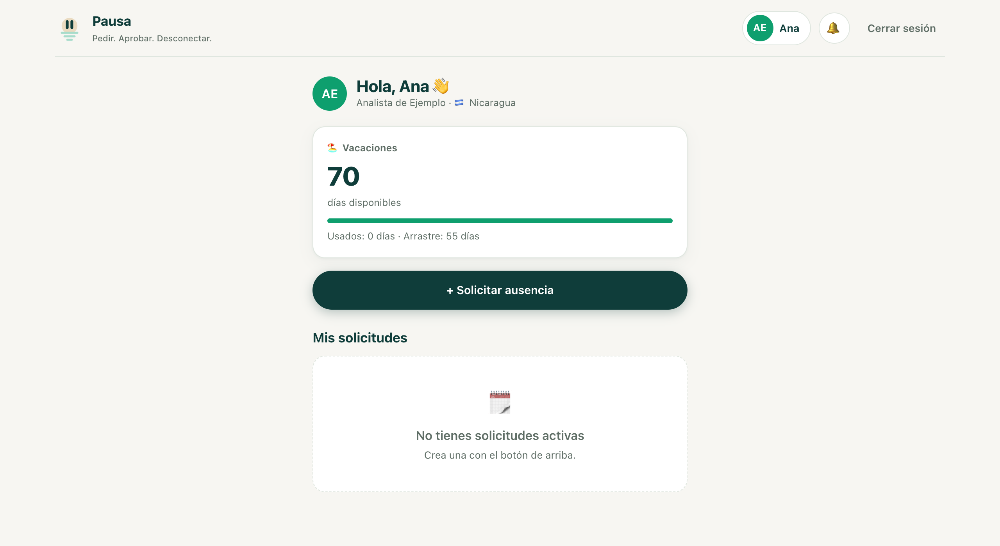
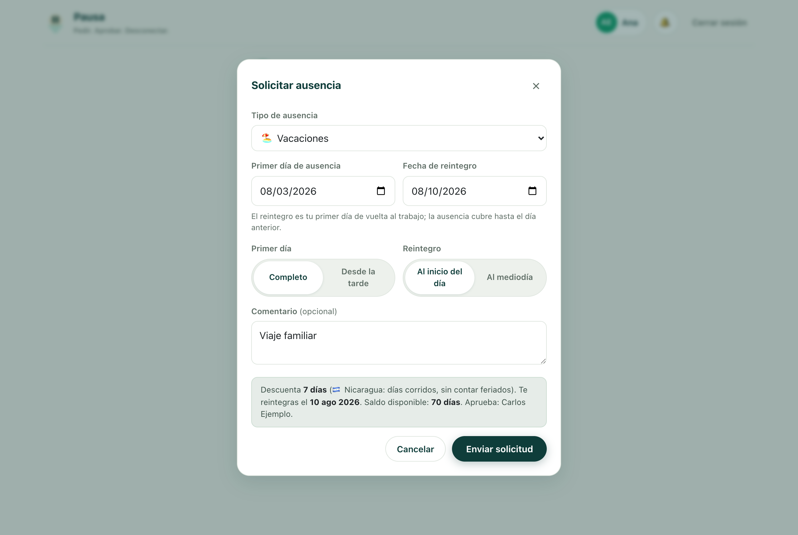
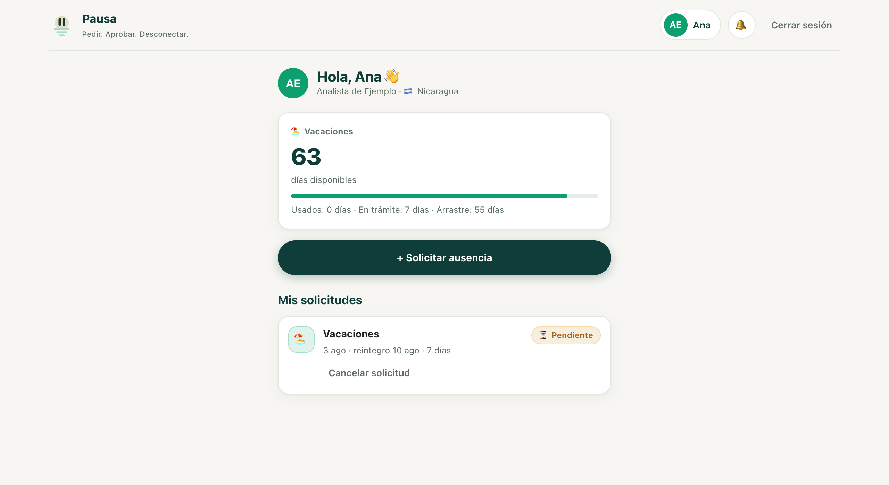
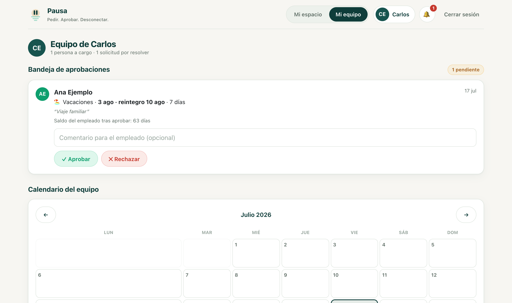
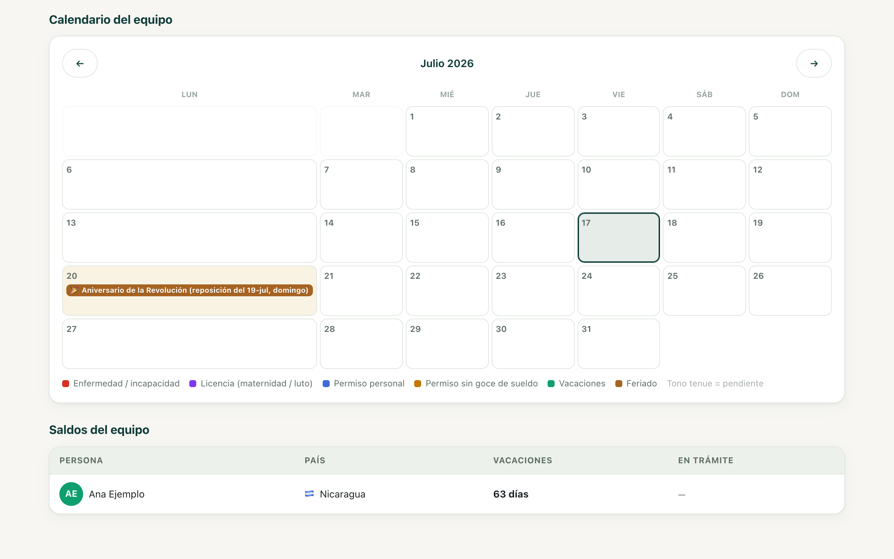

Pedir. Aprobar. Desconectar.
Pausa es nuestra plataforma para pedir vacaciones y permisos. Tu saldo se calcula solo, tu jefe aprueba con un clic y todo queda registrado. Este manual te enseña lo esencial en 5 minutos.
pausa → tomassanchez-ampm.github.io/grupo-ai-ausencias

💡 El código es de un solo uso y vence pronto. Si pediste varios, vale el del último correo. ¿Venció o no te funcionó? Pulsa “Usar otro correo o pedir un código nuevo” y pide otro — no pasa nada. ¿No llega? Revisa la carpeta de spam.

Al entrar ves tu espacio: arriba, tu nombre con tu puesto, tu empresa y tu país; debajo, tu saldo de vacaciones disponible, calculado automáticamente: lo que traías al inicio + lo que acumulas cada mes según las reglas de tu país − lo que ya usaste. Lo que tienes en trámite ya va descontado.
📅 Pausa cuenta los días según la ley de tu país (solo días laborables, días corridos sin feriados o días corridos) y ya conoce sus feriados. Antes de enviar verás qué regla te aplica.

🔑 La fecha de reintegro es la clave: si vuelves un lunes, el fin de semana cuenta o no según la ley de tu país — Pausa hace ese cálculo por ti y te lo muestra antes de enviar. También puedes pedir medios días (“Desde la tarde” en el primer día / “Al mediodía” en el reintegro).
⚠️ ¿No te alcanza el saldo? Puedes enviar la solicitud igual. Pausa te avisa que supera tu saldo y en cuánto quedarías sobregirado; tu aprobador ve el mismo aviso y decide. Si la aprueba, tu saldo queda negativo (lo verás en rojo, como “sobregirado”) y se va cubriendo con tu acumulación de los próximos meses.

Tu solicitud queda Pendiente y tu aprobador recibe un aviso al instante (en la app y por correo). Cuando decida, te llega un correo con la respuesta y su comentario.
¿Cambiaste de planes? Mientras esté pendiente puedes cancelarla tú mismo desde “Mis solicitudes”.
¿Ya estaba aprobada? Pídele a tu jefe o a Administración que la cancele: escriben el motivo, los días regresan a tu saldo y recibes el aviso por correo.
En tu pestaña “Mi equipo” encuentras la bandeja de aprobaciones: cada tarjeta muestra quién pide, las fechas, cuántos días descuenta y cómo queda su saldo si apruebas.
Escribe un comentario si quieres y pulsa ✓ Aprobar o ✕ Rechazar. La persona recibe la respuesta por correo al momento, y tu propio jefe recibe una copia informativa de lo que apruebas.

⚠️ Si a la persona no le alcanza el saldo, la tarjeta te lo avisa: cuánto tiene, cuánto descuenta la solicitud y en cuánto quedaría sobregirada. Tú decides; si apruebas, su saldo queda negativo y se cubre con su acumulación de los próximos meses.
Cuando tu equipo tiene ausencias aprobadas en curso o por venir, debajo de la bandeja aparece la sección “Aprobadas en curso o próximas”. Una aprobada no se edita, se cancela:
Si solo cambian las fechas, cancela y pídele que solicite de nuevo. Como jefe cancelas las de tu equipo directo; Administración, las de toda la organización.
👀 En la misma pestaña tienes el calendario del equipo (quién está fuera y cuándo, con feriados marcados) y los saldos de tu gente; un saldo negativo aparece en rojo con la marca “(sobregiro)”.
